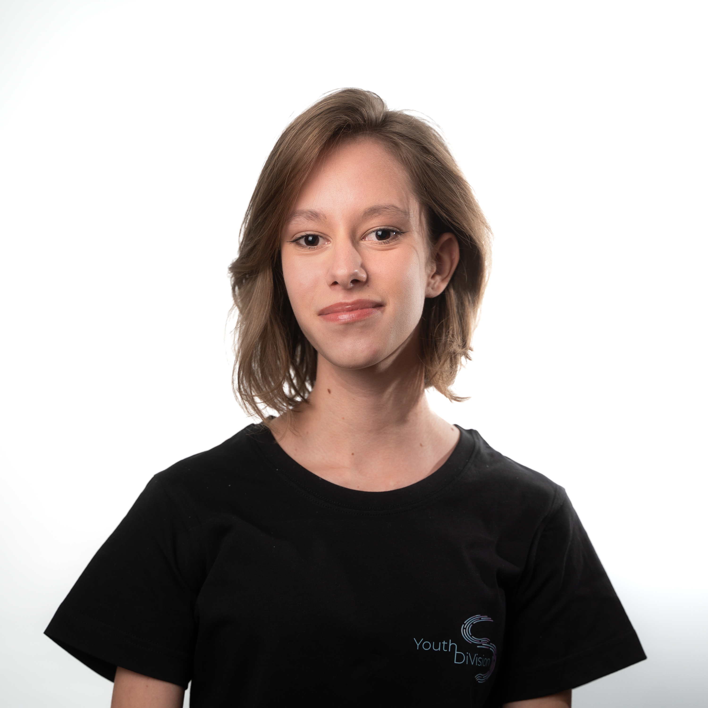
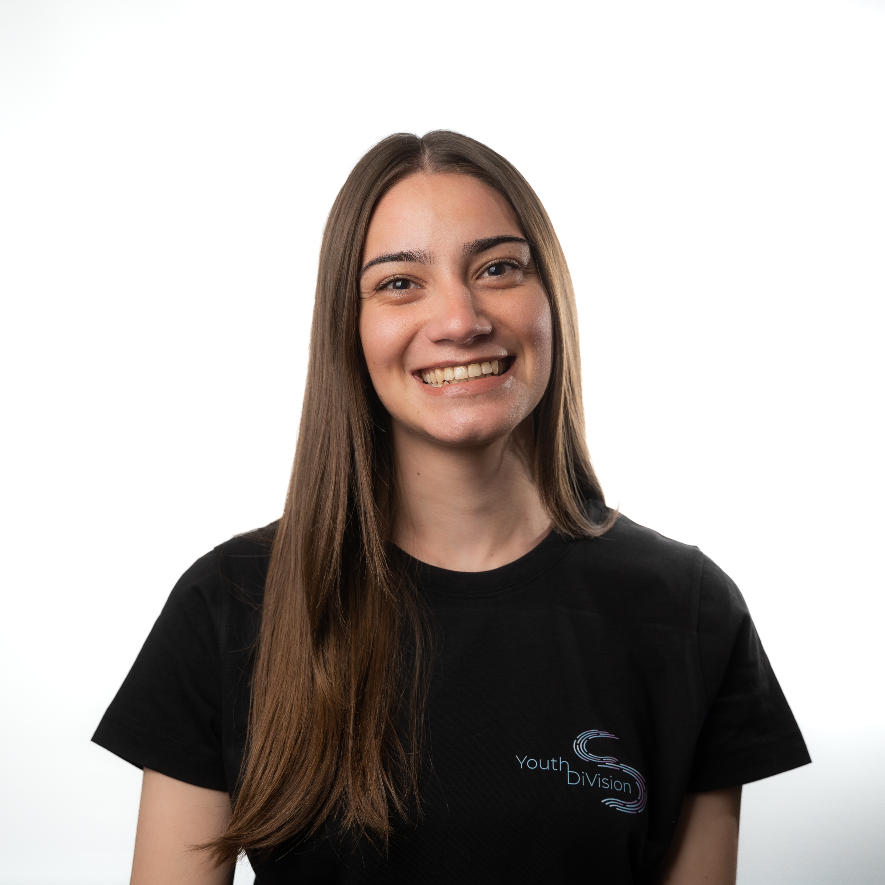

Celine PALEA este elevă la Liceul Teoretic „Roth-Oberth" din Mediaș și a participat la mai multe voluntariate, precum Festivalul Internațional de Teatru de la Sibiu (FITS), UNTOLD, Guitar Meeting Festival, Let's Do It, România!, iar în prezent face parte și din ONG-ul Interact Mediaș. Aceste experiențe au ajutat-o să își dezvolte abilitățile de comunicare, organizare și lucru în echipă.
Aceasta este o persoană creativă, motivată și dornică să învețe lucruri noi, mereu în căutarea unor moduri prin care să se poată exprima autentic și să aducă o schimbare pozitivă în jurul ei. Unul dintre hobby-urile sale este realizarea hainelor. Pentru ea, felul în care se îmbracă reprezintă o formă de exprimare personală și o sursă de încredere. De când a început să își personalizeze hainele sau chiar să le creeze de la zero, a învățat cât de importantă este răbdarea și cât de satisfăcător este să transformi o idee într-o realitate palpabilă.
Celine face parte din echipa de proiecte, unde își dorește să contribuie cu idei și multă energie. A ales să se implice în YDV Sibiu pentru că simte că este un mediu unde tinerii se pot exprima liber, pot învăța unii de la alții și pot crea împreună inițiative cu impact real asupra comunității.
Aceasta este o persoană creativă, motivată și dornică să învețe lucruri noi, mereu în căutarea unor moduri prin care să se poată exprima autentic și să aducă o schimbare pozitivă în jurul ei. Unul dintre hobby-urile sale este realizarea hainelor. Pentru ea, felul în care se îmbracă reprezintă o formă de exprimare personală și o sursă de încredere. De când a început să își personalizeze hainele sau chiar să le creeze de la zero, a învățat cât de importantă este răbdarea și cât de satisfăcător este să transformi o idee într-o realitate palpabilă.
Celine face parte din echipa de proiecte, unde își dorește să contribuie cu idei și multă energie. A ales să se implice în YDV Sibiu pentru că simte că este un mediu unde tinerii se pot exprima liber, pot învăța unii de la alții și pot crea împreună inițiative cu impact real asupra comunității.
Sara COJOCARU își găsește motivația în lucrurile aparent mici, dar pline de semnificație. Pasiunea ei pentru artă se manifestă în multiple forme, de la pictură și muzică, la artă vizuală și până la modul său de a privi lumea. Elevă a Liceului de Arte din Sibiu, Sara îmbină în mod natural creativitatea cu dorința de a aduce un impact pozitiv în comunitate.
De-a lungul timpului, s-a implicat activ în numeroase proiecte și evenimente culturale, printre care Hackathonul UrbanUp TU_ACT din Sibiu, Festivalul Internațional de Teatru de la Sibiu (FITS), Guitar Meeting Festival, precum și alte inițiative care promovează arta și implicarea civică. Prin aceste experiențe, și-a dezvoltat abilități de colaborare, responsabilitate și adaptabilitate.
Sara a ales să se alăture echipei Youth DiVision Sibiu din dorința de a contribui la dezvoltarea comunității de tineri din Sibiu și inspirată de impactul pozitiv al educației nonformale. Prin activitatea sa în cadrul asociației, a descoperit oportunități de învățare, autodepășire și exprimare liberă.
Astăzi, face parte din echipa de proiecte a organizației, unde își valorifică pasiunea pentru artă, creativitatea și energia în construirea de inițiative dedicate tinerilor.
De-a lungul timpului, s-a implicat activ în numeroase proiecte și evenimente culturale, printre care Hackathonul UrbanUp TU_ACT din Sibiu, Festivalul Internațional de Teatru de la Sibiu (FITS), Guitar Meeting Festival, precum și alte inițiative care promovează arta și implicarea civică. Prin aceste experiențe, și-a dezvoltat abilități de colaborare, responsabilitate și adaptabilitate.
Sara a ales să se alăture echipei Youth DiVision Sibiu din dorința de a contribui la dezvoltarea comunității de tineri din Sibiu și inspirată de impactul pozitiv al educației nonformale. Prin activitatea sa în cadrul asociației, a descoperit oportunități de învățare, autodepășire și exprimare liberă.
Astăzi, face parte din echipa de proiecte a organizației, unde își valorifică pasiunea pentru artă, creativitatea și energia în construirea de inițiative dedicate tinerilor.


Daria-Nicola PĂVĂLUCĂ este voluntar în departamentul de PR din cadrul YDV Sibiu.
De-a lungul liceului, aceasta a participat la programe de voluntariat în cadrul mai multor festivaluri de muzică locale, iar în prezent face parte din Sibiu cu Demnitate și Semn că Însemni.
A fost studentă 2 ani la ULBS, Inginerie, însă intuiția mereu i-a spus că trebuie să urmeze un drum uman, nu real, astfel, după un an sabatic, a luat o decizie de care este foarte mulțumită: Jurnalismul. Acum este studentă în anul 2 la Jurnalism, îi place să comunice, să scrie și să pună multe întrebări. Pe lângă Jurnalism, Daria are un brand care se axează pe haine croșetate și tricotate – încearcă foarte mult să inspire la o viață mai slow și sustenabilă. Totodată, în viața ei este prezentă foarte mult natura și cafeaua.
A ales să se implice în YDV Sibiu, deoarece crede în puterea comunității și vrea să fie parte din oamenii care ajută tinerii din Sibiu.
De-a lungul liceului, aceasta a participat la programe de voluntariat în cadrul mai multor festivaluri de muzică locale, iar în prezent face parte din Sibiu cu Demnitate și Semn că Însemni.
A fost studentă 2 ani la ULBS, Inginerie, însă intuiția mereu i-a spus că trebuie să urmeze un drum uman, nu real, astfel, după un an sabatic, a luat o decizie de care este foarte mulțumită: Jurnalismul. Acum este studentă în anul 2 la Jurnalism, îi place să comunice, să scrie și să pună multe întrebări. Pe lângă Jurnalism, Daria are un brand care se axează pe haine croșetate și tricotate – încearcă foarte mult să inspire la o viață mai slow și sustenabilă. Totodată, în viața ei este prezentă foarte mult natura și cafeaua.
A ales să se implice în YDV Sibiu, deoarece crede în puterea comunității și vrea să fie parte din oamenii care ajută tinerii din Sibiu.
Ariana CRÂSNIC este o persoană pasionată, creativă și flexibilă. Este foarte atrasă de teatru și se consideră o persoană prezentă și deschisă, căreia îi place să se înconjoare de oameni autentici.
După finalizarea liceului, a ales să își ia un gap year, perioadă în care își propune să se dezvolte în diverse domenii și să învețe cât mai mult, pentru a-și putea alege un drum profesional original, care să o definească.
Pe parcursul anilor de liceu, a participat la mai multe programe de voluntariat, precum Interact, Festivalul Internațional de Teatru de la Sibiu (FITS) sau activitatea de ghid cultural și istoric la Biserica Evanghelică din Mediaș. De asemenea, timp de patru ani a făcut parte din echipa de robotică The Resistance, cu care a participat la numeroase competiții în cadrul concursului FIRST Tech Challenge.
În echipa YDV Sibiu, Ariana are rolul de voluntar în cadrul departamentului de proiecte.
A ales să se implice în YDV Sibiu, deoarece își dorește să se descopere pe ea însăși alături de alte persoane deschise. A văzut în această asociație o comunitate autentică, cu un impact real asupra generației din care face parte, un impact la care și-a dorit să contribuie. Ariana își dorește să învețe de la alți oameni, în timp ce îi învață, la rândul ei.
După finalizarea liceului, a ales să își ia un gap year, perioadă în care își propune să se dezvolte în diverse domenii și să învețe cât mai mult, pentru a-și putea alege un drum profesional original, care să o definească.
Pe parcursul anilor de liceu, a participat la mai multe programe de voluntariat, precum Interact, Festivalul Internațional de Teatru de la Sibiu (FITS) sau activitatea de ghid cultural și istoric la Biserica Evanghelică din Mediaș. De asemenea, timp de patru ani a făcut parte din echipa de robotică The Resistance, cu care a participat la numeroase competiții în cadrul concursului FIRST Tech Challenge.
În echipa YDV Sibiu, Ariana are rolul de voluntar în cadrul departamentului de proiecte.
A ales să se implice în YDV Sibiu, deoarece își dorește să se descopere pe ea însăși alături de alte persoane deschise. A văzut în această asociație o comunitate autentică, cu un impact real asupra generației din care face parte, un impact la care și-a dorit să contribuie. Ariana își dorește să învețe de la alți oameni, în timp ce îi învață, la rândul ei.


Anamaria-Mihaela ALDEA este studentă la Facultatea de Științe Socio-Umane, specializarea Științe Politice, în cadrul Universității „Lucian Blaga" din Sibiu, unde își reprezintă colegii ca membră în Senatul Facultății.
A pornit dintr-o comunitate rurală mică, locul unde a învățat ce înseamnă implicarea, solidaritatea și puterea inițiativei. Tocmai de aceea a ales această facultate – pentru a aprofunda domeniul politicilor publice și al organizațiilor neguvernamentale, două direcții prin care crede că poate contribui la dezvoltarea comunităților.
Anamaria este o persoană căreia îi place să se implice într-o multitudine de activități. Îi place să ajute la îmbunătățirea lucrurilor, indiferent de natura lor. Seriozitatea, încrederea în sine și abilitățile organizatorice sunt câteva dintre punctele ei forte.
Drumul său în voluntariat a început în 2019, alături de Asociația Cavalerii Turnului Înclinat din Ruși, unde a fost membră în grupul de inițiativă Slimnic – Sat European de Tineret 2021-2022 și s-a implicat în scrierea și implementarea de proiecte prin Corpul European de Solidaritate. Ulterior, s-a alăturat Crucii Roșii Române – Filiala Sibiu, Consiliului Județean al Elevilor Sibiu, Rotaract Club Sibiu, a fost voluntară la Astra Film Festival, Maratonul Internațional Sibiu și a absolvit Academia de Leadership Urban, ambele programe ale Fundației Comunitare Sibiu.
S-a alăturat YDV Sibiu, deoarece crede în puterea tinerilor de a genera schimbare prin inițiativă, colaborare și încredere reciprocă.
A pornit dintr-o comunitate rurală mică, locul unde a învățat ce înseamnă implicarea, solidaritatea și puterea inițiativei. Tocmai de aceea a ales această facultate – pentru a aprofunda domeniul politicilor publice și al organizațiilor neguvernamentale, două direcții prin care crede că poate contribui la dezvoltarea comunităților.
Anamaria este o persoană căreia îi place să se implice într-o multitudine de activități. Îi place să ajute la îmbunătățirea lucrurilor, indiferent de natura lor. Seriozitatea, încrederea în sine și abilitățile organizatorice sunt câteva dintre punctele ei forte.
Drumul său în voluntariat a început în 2019, alături de Asociația Cavalerii Turnului Înclinat din Ruși, unde a fost membră în grupul de inițiativă Slimnic – Sat European de Tineret 2021-2022 și s-a implicat în scrierea și implementarea de proiecte prin Corpul European de Solidaritate. Ulterior, s-a alăturat Crucii Roșii Române – Filiala Sibiu, Consiliului Județean al Elevilor Sibiu, Rotaract Club Sibiu, a fost voluntară la Astra Film Festival, Maratonul Internațional Sibiu și a absolvit Academia de Leadership Urban, ambele programe ale Fundației Comunitare Sibiu.
S-a alăturat YDV Sibiu, deoarece crede în puterea tinerilor de a genera schimbare prin inițiativă, colaborare și încredere reciprocă.
Teodora CREȚU este definită de energia ei și abilitatea de a se adapta indiferent de context.
Se remarcă adesea prin pasiunea pe care o pune în orice face, astfel transformă fiecare idee creață într-o acțiune măreață. Ea este elevă la Colegiul Național „Octavian Goga" din Sibiu.
Nevoia de a își pune amprenta a determinat-o de-a lungul timpului să se implice în multiple acțiuni de voluntariat, cu un impact puternic în comunitate. S-a implicat în proiecte/asociații precum Festivalul Internațional de Teatru de la Sibiu (FITS), Asociația pentru Libertate și Egalitate de Gen, Astra Film Festival, Guitar Meeting Festival, precum și în hackathon-ul TU_ACT în Sibiu, unde a pus bazele unei idei privind peisajul urban.
Asociația a învățat-o să se descurce sub presiune și a ajutat-o să și depășească frici pe care nici nu știa ca le avea, astfel YDV Sibiu a devenit o a doua familie pentru ea. Atrasă de persoanele și de atmosfera primitoare din organizație, ea a devenit voluntară YDV Sibiu, implicându-se în proiectele organizației.
Se remarcă adesea prin pasiunea pe care o pune în orice face, astfel transformă fiecare idee creață într-o acțiune măreață. Ea este elevă la Colegiul Național „Octavian Goga" din Sibiu.
Nevoia de a își pune amprenta a determinat-o de-a lungul timpului să se implice în multiple acțiuni de voluntariat, cu un impact puternic în comunitate. S-a implicat în proiecte/asociații precum Festivalul Internațional de Teatru de la Sibiu (FITS), Asociația pentru Libertate și Egalitate de Gen, Astra Film Festival, Guitar Meeting Festival, precum și în hackathon-ul TU_ACT în Sibiu, unde a pus bazele unei idei privind peisajul urban.
Asociația a învățat-o să se descurce sub presiune și a ajutat-o să și depășească frici pe care nici nu știa ca le avea, astfel YDV Sibiu a devenit o a doua familie pentru ea. Atrasă de persoanele și de atmosfera primitoare din organizație, ea a devenit voluntară YDV Sibiu, implicându-se în proiectele organizației.


Maria VULCU este curioasă, mereu gata să accepte noi provocări și să exploreze noi domenii. Ea studiază la Colegiul Național „Octavian Goga" din Sibiu.
Creativitatea este la ea acasă în gândurile ei, scoțând la suprafață idei pline de culoare. În timpul liber, îi place să fie în mijlocul naturii, să călătorească și să descopere locuri, dar și oameni noi. Deși are programul plin de activități precum aviația, pictura, croșetatul sau cântatul la chitară, mereu își găsește timp pentru a se bucura de voluntariate și proiecte precum Maratonul Internațional Sibiu, Festivalul Internațional de Teatru de la Sibiu (FITS), Astra Film Festival, dar și hackathon-ul TU_ACT, proiect marca Urban Up powered by de-a arhitectura.
Asociația YDV Sibiu a ajutat-o pe Maria să descopere noi hobby-uri, persoane noi, astfel descoperindu-și interesele. Ea face parte din echipa de PR a familiei Youth DiVision Sibiu.
Creativitatea este la ea acasă în gândurile ei, scoțând la suprafață idei pline de culoare. În timpul liber, îi place să fie în mijlocul naturii, să călătorească și să descopere locuri, dar și oameni noi. Deși are programul plin de activități precum aviația, pictura, croșetatul sau cântatul la chitară, mereu își găsește timp pentru a se bucura de voluntariate și proiecte precum Maratonul Internațional Sibiu, Festivalul Internațional de Teatru de la Sibiu (FITS), Astra Film Festival, dar și hackathon-ul TU_ACT, proiect marca Urban Up powered by de-a arhitectura.
Asociația YDV Sibiu a ajutat-o pe Maria să descopere noi hobby-uri, persoane noi, astfel descoperindu-și interesele. Ea face parte din echipa de PR a familiei Youth DiVision Sibiu.
Mădălina CLINCIU este o persoană caldă, prietenoasă și răbdătoare, care își găsește bucuria în activitățile creative. Îi place să modeleze sau să lucreze la puzzle-uri, activități care o relaxează și îi dezvoltă atenția la detalii. Este curioasă și deschisă, mereu dornică să învețe și să se implice în proiecte care aduc valoare comunității.
Pe plan profesional, a fost activă în voluntariate încă din liceu, inclusiv la Maratonul Internațional Sibiu și în cadrul YDV Sibiu (Urban Culture: trilogy. A youth to youth intercultural learning experience), unde a participat la diverse evenimente. A absolvit Facultatea de Științe Economice a ULBS, specializarea Management, și a urmat cursuri de comunicare și management de proiect.
În cadrul YDV Sibiu, are rolul de voluntar în proiecte. A ales să se implice, deoarece a beneficiat de programe pentru tineri care au avut un impact real asupra sa și crede în puterea acestora de a transforma comunitatea.
Pe plan profesional, a fost activă în voluntariate încă din liceu, inclusiv la Maratonul Internațional Sibiu și în cadrul YDV Sibiu (Urban Culture: trilogy. A youth to youth intercultural learning experience), unde a participat la diverse evenimente. A absolvit Facultatea de Științe Economice a ULBS, specializarea Management, și a urmat cursuri de comunicare și management de proiect.
În cadrul YDV Sibiu, are rolul de voluntar în proiecte. A ales să se implice, deoarece a beneficiat de programe pentru tineri care au avut un impact real asupra sa și crede în puterea acestora de a transforma comunitatea.


Ariana DOBRE a terminat Liceul Teoretic „Roth-Oberth" din Mediaș și se află acum într-un gap year, perioadă în care dorește să-și dezvolte pasiunea pentru fotografie și să dedice mai mult timp micilor sale plăceri, precum cititul, mersul la teatru și implicarea în comunitate.
Încă de la începutul liceului și până în prezent, Ariana a participat la proiecte de voluntariat, cum ar fi echipa de robotică „The Resistance", Festivalul Internațional de Teatru de la Sibiu (FITS) clubul Interact Mediaș și proiectul de ghid turistic bisericesc la Biserica „Sfânta Margareta" (prezentarea în trei limbi a istoriei bisericii).
Aceste proiecte au supus-o unor provocări care au ajutat-o să iasă din zona de confort și să se dezvolte pe plan personal și profesional.
A ales să se implice în Youth DiVision Sibiu din dorința de a contribui la proiecte cu impact real, într-o comunitate deschisă, cu viziuni clare asupra unui viitor mai implicat și mai conștient social. În cadrul YDV Sibiu face parte din echipa de PR.
Încă de la începutul liceului și până în prezent, Ariana a participat la proiecte de voluntariat, cum ar fi echipa de robotică „The Resistance", Festivalul Internațional de Teatru de la Sibiu (FITS) clubul Interact Mediaș și proiectul de ghid turistic bisericesc la Biserica „Sfânta Margareta" (prezentarea în trei limbi a istoriei bisericii).
Aceste proiecte au supus-o unor provocări care au ajutat-o să iasă din zona de confort și să se dezvolte pe plan personal și profesional.
A ales să se implice în Youth DiVision Sibiu din dorința de a contribui la proiecte cu impact real, într-o comunitate deschisă, cu viziuni clare asupra unui viitor mai implicat și mai conștient social. În cadrul YDV Sibiu face parte din echipa de PR.
Iana CÂRSTEA are energie și spirit de viață. Iubește să pună lucrurile în mișcare și se pricepe să aducă oamenii împreună. Îi place teatrul și își dorește mereu să învețe lucruri noi.
Este elevă la Colegiul Național „Octavian Goga" din Sibiu și o voluntară activă. În urma mai multor tabere și programe de inteligență emoțională și dezvoltare personală, și-a dezvoltat o pasiune arzătoare pentru a lucra cu tinerii și copiii. În cadrul organizației, este parte din echipa de proiecte și aduce energie colegilor ei.
Împreună cu echipa, simte că poate contribui la un scop mai mare, care aduce beneficii reale generației de tineri sibieni.
Este elevă la Colegiul Național „Octavian Goga" din Sibiu și o voluntară activă. În urma mai multor tabere și programe de inteligență emoțională și dezvoltare personală, și-a dezvoltat o pasiune arzătoare pentru a lucra cu tinerii și copiii. În cadrul organizației, este parte din echipa de proiecte și aduce energie colegilor ei.
Împreună cu echipa, simte că poate contribui la un scop mai mare, care aduce beneficii reale generației de tineri sibieni.